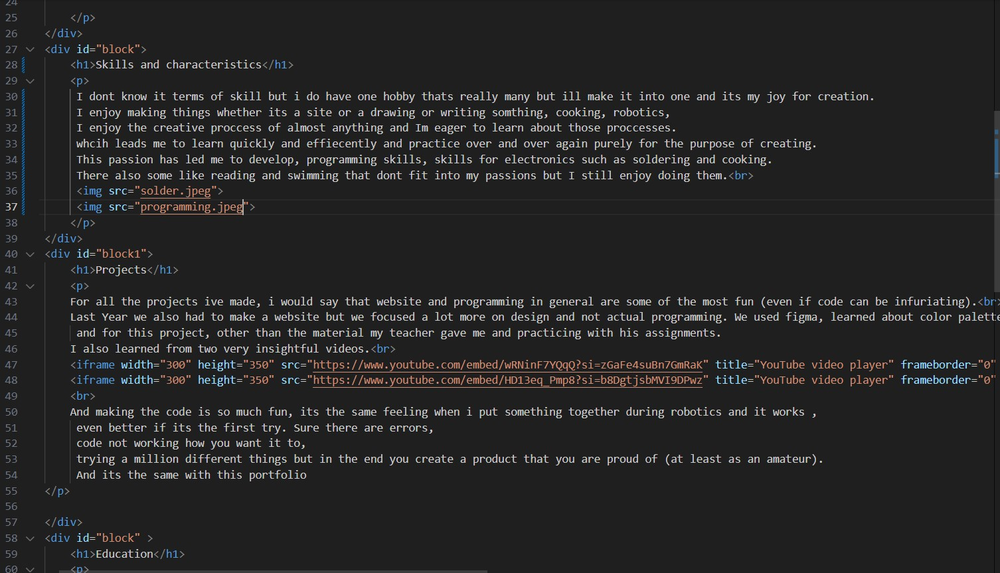
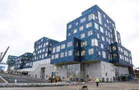

Hello and Welcome to my Portfolio
Let's get some basic info out of the way. My name is Andrei Dadu
I'm 15 years old. I was born and raised in Moldova until around 2013 when my family moved to Denmark,
i came back to Moldova around 2018. I enjoy most STEM subjects like math, programming, physics, chemistry etc.
And struggle with others like languages. My hobbies include reading, swimming, robotics, cooking, music and drawing.
Two of the biggest joys of my life are my friends and my family,
they've supported me through everything and i can't thank them enough for it.
I dont know it terms of skill but i do have one hobby thats really many but ill make it into one and its my joy for creation.
I enjoy making things whether its a site or a drawing or writing somthing, cooking, robotics,
I enjoy the creative proccess of almost anything and Im eager to learn about those proccesses.
whcih leads me to learn quickly and effiecently and practice over and over again purely for the purpose of creating.
This passion has led me to develop, programming skills, skills for electronics such as soldering and cooking.
There also some like reading and swimming that dont fit into my passions but I still enjoy doing them.

For all the projects ive made, i would say that website and programming in general are some of the most fun (even if code can be infuriating).
Last Year we also had to make a website but we focused a lot more on design and not actual programming. We used figma, learned about color palettes, proportions, element hierarchy etc. etc. But to be honest the code is the most fun.
and for this project, other than the material my teacher gave me and practicing with his assignments.
I also learned from two very insightful videos.
And making the code is so much fun, its the same feeling when i put something together during robotics and it works ,
even better if its the first try. Sure there are errors,
code not working how you want it to,
trying a million different things but in the end you create a product that you are proud of (at least as an amateur).
And its the same with this portfolio
In denmark i went an International school called CIS.
I was there from kindergarden to 3rd grade. Then i moved to a public school, but i only stayed there for one semester.
then after another public school this time in Moldova I finally came to Liceul Teoretic Orizont.
I also attend robotics classes and have been for about 2 years now.

@rainbow_tomato
andrei.dadu@orizont.md